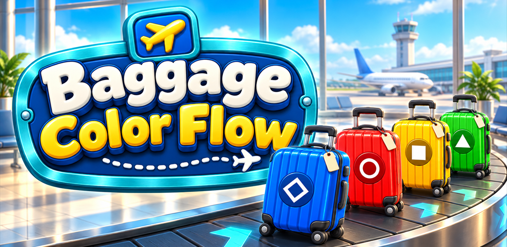
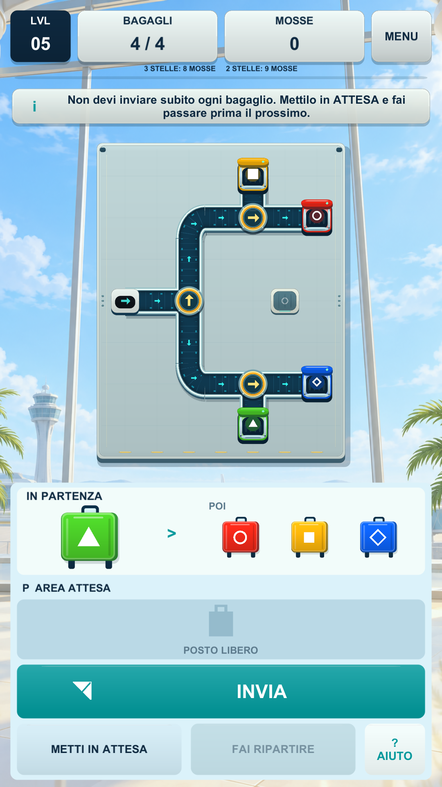
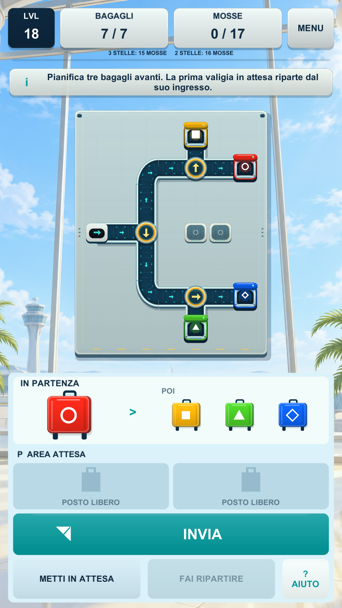
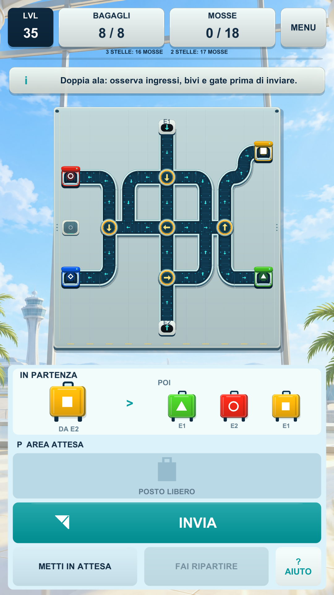
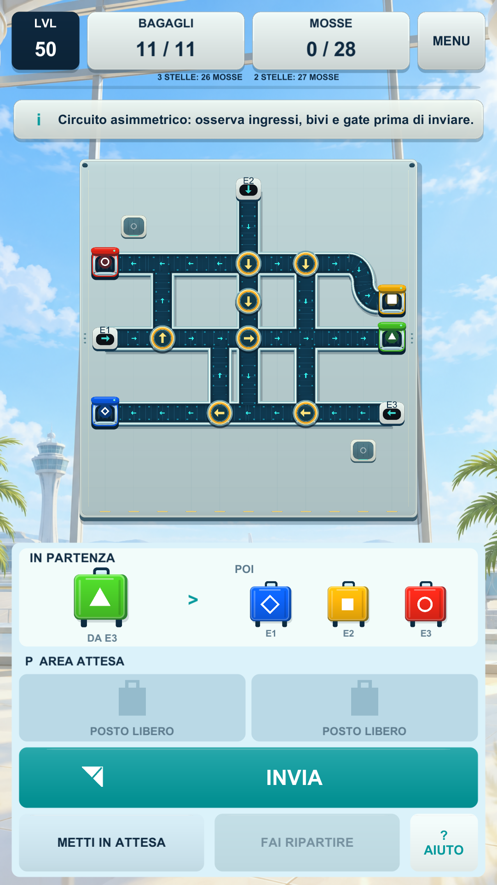

OFFICIAL PRESS KIT · AVAILABLE ON GOOGLE PLAY
Baggage Color Flow
A colorful mobile puzzle about routing luggage through airport conveyor belts, rotating diverters, waiting bays and matching gates.
Main artwork


Official illustrative landscape artwork, 1024 × 500. This is key art, not a gameplay screenshot.
Game facts
LuSor Games / DLF Technology
Android
Sorting / Routing / Puzzle
Released 30 October 2026
Full description
Baggage Color Flow turns an airport conveyor network into 50 compact logic puzzles. Read the incoming luggage queue, rotate diverters, hold a suitcase in a waiting bay and prepare a route to the gate with the same color and symbol. Move targets and three-star scoring encourage careful planning and replay. Progress and audio preferences are stored locally. The game is free with advertisements, with optional rewarded hints when available, and no in-app purchases.
Audience: players who enjoy sorting, routing and short logic challenges. Available in English and Italian.
Short description
Bring order to an airport baggage system by reading upcoming colors, rotating conveyor switches, using waiting bays and routing every suitcase to the correct gate.
Key features
- Color-based baggage matching
- Rotating route switches and diverters
- Temporary waiting bays
- Move targets and three-star scoring
- 50 playable puzzle levels
- Portrait mobile-first interface
Authentic gameplay screenshots
Unretouched Italian captures from the released game’s Unity runtime, 1080 × 1920. Not physical-device photographs. Artwork is provided separately above.




Creator downloads
Download the official creator pack (ZIP) · Machine-readable product facts · Image provenance and dimensions
Use the supplied images and descriptions for editorial or creator coverage of this game. Keep artwork and gameplay captions accurate. No game binaries are included.
Press contact
LuSor Games · lusor83@gmail.com